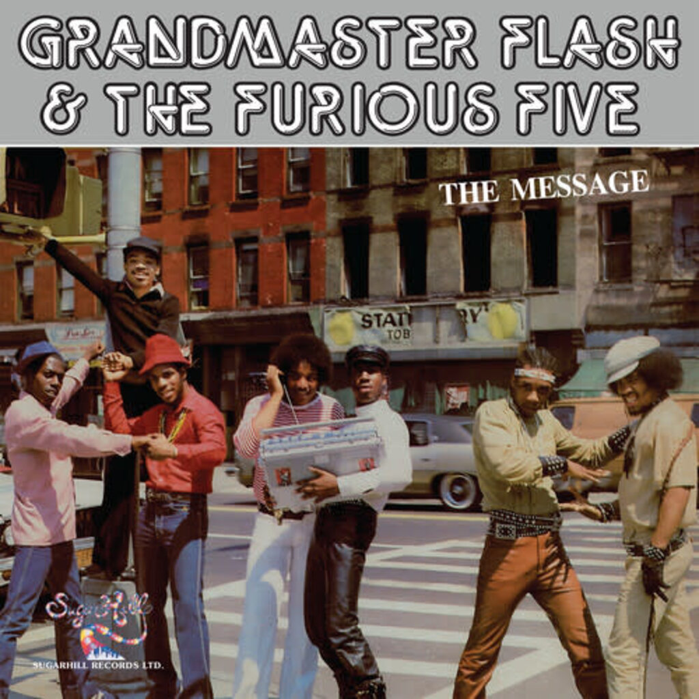

MUS 302 · What to Listen for in Music
Module 2: African American Foundational Traditions · Listening Guide · Track 4 of 5
Track 4 Grandmaster Flash and the Furious Five, "The Message" (1982)

Context
The South Bronx that made
To listen to "The Message" you need to know the place it comes from. The in the late 1970s and early 1980s was a national symbol of urban collapse. Two decades earlier, 's had been driven through the middle of working-class Bronx neighborhoods, displacing tens of thousands of residents and severing the social fabric of the borough. followed; between 1950 and 1960 the South Bronx went from two-thirds non-Hispanic white to two-thirds Black and Puerto Rican. made it nearly impossible to get a mortgage in those neighborhoods, so the housing stock decayed. As the Bronx , manufacturing jobs disappeared. Beginning around 1972, landlords who could no longer rent their buildings profitably began torching them for the insurance money; whole blocks burned. The fire decade left the South Bronx looking, in the often-repeated phrase, like a war zone, and that visual was the one most Americans associated with the borough by the time President Jimmy Carter walked through the rubble of Charlotte Street on national television in 1977.
Out of those conditions, mostly Black, Caribbean, and Puerto Rican teenagers in the Bronx built a new musical culture. The standard origin story dates the founding moment to August 11, 1973, when , a Jamaican-born teenager living at 1520 Sedgwick Avenue in the West Bronx, threw a back-to-school party in his building's recreation room and used two turntables to extend the rhythmic of a record so the dancers could keep moving. From there hip hop spread block by block. built a community of DJs, MCs, dancers, and graffiti writers around in the Bronx River Houses. (Joseph Saddler), born in Barbados and raised in the South Bronx, took an electronics-class background and a metronomic obsession with rhythmic precision and used them to develop the techniques that would turn the turntables into an instrument: the quick-mix, the backspin, the crossfader as an articulating device. By the time Flash and his rapping crew, the Furious Five, signed to in 1980, hip hop had been a Bronx local culture for almost seven years. What it had not yet been was a national one.
Sugar Hill Records and Sylvia Robinson
The first hip hop record to break out commercially was the Sugarhill Gang's "Rapper's Delight" in 1979. The label that put it out was new, and the woman who ran it had been around since the 1950s. had recorded as Little Sylvia in the 1950s and as half of Mickey & Sylvia ("Love Is Strange," 1956); in 1973 she had a solo hit, "Pillow Talk." When she saw Lovebug Starski rapping over the break of Chic's "Good Times" at a New Jersey nightclub in 1979, she recognized a commercial opportunity. She founded Sugar Hill Records, named after the Harlem neighborhood, with her husband Joe Robinson; she assembled a studio band and a group of rappers off the street; "Rapper's Delight" sold millions; and Sugar Hill quickly became hip hop's first major commercial label. Robinson is now widely called the "Mother of Hip-Hop." She did not invent any of the techniques she put on record. What she did was hear that the music had potential before anyone else in the industry did, and she built a label around that hearing.
In 1980 Robinson signed Grandmaster Flash and the Furious Five away from Bobby Robinson's Enjoy Records (no relation), and over the next two years she had them record a series of singles, including 1981's "The Adventures of Grandmaster Flash on the Wheels of Steel," the first commercially released record to feature live as the music itself. By 1981 Robinson had been pushing the group, off and on, toward something they did not want to do: a serious record about life in the Bronx. The Five resisted. As later put it, they wanted to make party records, the kind of records hip hop had always been. Robinson kept pushing.
The recording: who actually made "The Message"
The song that became "The Message" was largely written and performed by , a percussionist in Sugar Hill's , with co-writing and co-production by . The hook came first. In a 2013 oral history with The Guardian, Chase recalled being at Bootee's apartment in Elizabeth, New Jersey: Bootee was lying on a couch with one leg over the edge complaining about his life, and the line "don't push me, 'cause I'm close to the edge, I'm trying not to lose my head" came out of his mouth. Chase recognized a hook. Robinson had been waiting for exactly this; she had her serious song. The two of them wrote most of the verses. The original 1980 idea responded to the New York City transit strike of that April, in which 33,000 transit workers walked off the job for twelve days and shut down the subways and buses, and the song still carries a trace of that origin in the line "can't take the train to the job, there's a strike at the station."
What is harder to explain in one sentence is who actually performed the recording. Two stages matter. The 1980 demo Bootee made on his own in Elizabeth, New Jersey, sometimes called "The Jungle," is where Bootee played most of the parts: the Oberheim DMX , keyboards, and percussion. The released 1982 studio version added overdubs from Sugar Hill's house rhythm section, the Englewood, New Jersey band that played on most of the label's hits in this period: on bass, on drums, and on guitar. The album credits also list Dwain Mitchell and Gary Henry on additional keyboards. The instantly recognizable hook is credited on the album sleeve to three players together: , Chase, and Robinson, with Griffin generally credited in oral histories with adding the synth lick that became the song's signature. Bootee did the lead vocal on what he described as a reference take he assumed someone else would replace; Robinson decided to keep his voice on the record. Of the six people credited as Grandmaster Flash and the Furious Five, exactly one was on the record: Melle Mel, who delivered the song's climactic final verse, partly using a rhyme he had written for the group's earlier "Superrappin'" record on Enjoy. Grandmaster Flash, who hated the song, did not appear at the session. Neither did , , , or . In the official video, you can see Rahiem lip-syncing Bootee's voice. "The Message" was credited to Grandmaster Flash and the Furious Five because Robinson made the call that the group's name was the brand. The recording itself was something closer to a Duke Bootee song, finished out by the Sugar Hill house band and the label's in-house production team, with Melle Mel featured on the climactic verse and the credited group otherwise absent.
This is worth sitting with for a moment. Hip hop is sometimes described as the most "authentic" American popular music: a form that came directly from the street, unmediated by the recording industry. "The Message," the song that announced hip hop as a vehicle for serious social commentary, was the product of a , a producer, a label boss, and a house rhythm section working in a New Jersey studio, with the credited group mostly absent. That does not make the record less true. The conditions Bootee described in the lyrics were the conditions Melle Mel and the Five lived in. The studio system Robinson ran was, like the , a craft system in which writers and producers translated lived experience into a piece of recorded music other people could perform. What it does mean is that "authenticity" in hip hop is more complicated, from the very beginning, than the legend suggests.
Reception and afterlife
"The Message" was released as a 12-inch single by Sugar Hill on July 1, 1982, and as the title track of the album of the same name that October. It reached number 4 on the Billboard R&B chart and number 62 on the Hot 100; in Britain it reached number 8. NME named it the track of the year for 1982. The New York Times critic Robert Palmer called the album the best of the year. In 2002, in the 's first year, the Library of Congress chose "The Message" as one of the fifty inaugural recordings; it was the first hip hop track ever added. Rolling Stone's 2012 ranking called it the greatest hip hop song of all time. The 2007 Rock and Roll Hall of Fame inducted Grandmaster Flash and the Furious Five as the first hip hop act ever admitted.
The song's afterlife inside the music is even more important than the awards. The line "don't push me, 'cause I'm close to the edge" entered the language. The Oberheim DMX and the Prophet 5 hook have been hundreds of times, most famously on Ice Cube's "Check Yo Self" (1993) and Puff Daddy's "Can't Nobody Hold Me Down" (1997). The lineage from "The Message" to , KRS-One and Boogie Down Productions, NWA, Tupac Shakur, Lauryn Hill, Mos Def, Common, Kendrick Lamar, and Janelle Monáe runs through this record. Public Enemy's Chuck D, who would build his own career on socially conscious hip hop, told Rolling Stone that "'The Message' was a total knock out of the park. It was the first dominant rap group with the most dominant MC saying something that meant something." Almost everything we now call , a tradition we will pick up again in Module 6 with Kendrick Lamar's "Alright," begins here.
Things to listen for
The recording is in 4/4 at a of 101 , the slowest tempo of any anchor track in the module so far, and notably slower than the dance-hip-hop records that preceded it. The is G minor; the harmonic vocabulary is a short repeating two-chord pattern that loops for the entire song. The runtime of the official video is six minutes flat, with the album version running just over seven minutes. Like "Say It Loud," the song is built on a single repeating rather than verses-and-choruses in a conventional sense, and the structural interest comes from how the rapper organizes time on top of that vamp.
First, the timbre. This is the first track in the listening guide where the central voices are not singing in any conventional sense. They are rapping, which means they are speaking in metered, rhymed phrases over a . Compare Bootee's voice on the verses (lower, conversational, slightly weary) to James Brown's gravelly preaching from fourteen years earlier; the Brown intensity is gone, replaced by a flatter, more deliberate delivery that sounds like someone telling you the news. Then listen to Melle Mel's final verse, which begins around four minutes in with the line "a child is born with no state of mind." The timbre changes. Mel's voice is harder, faster, more aggressively rhythmic; he leans on the consonants and accelerates the lines. The two voices are doing different work. Bootee narrates a scene, the way a documentary voiceover might. Mel performs the climax. The shift is a model that hip hop will use ever after: a steady reportorial voice in the verses building toward an explosive lyrical peak, with the final verse carrying the argument the song has been working toward.
Then there is the timbre of the instruments. The drums on the recording are widely identified as an Oberheim DMX, an early sampling drum machine that played short recordings of real drum sounds; the kick, snare, and hi-hat patterns have the perfect rhythmic regularity of a programmed drum machine and that regularity is part of the song's claustrophobic feel. The album credits Keith LeBlanc on drums, and how exactly the live drumming and the drum machine were combined on the released master is not fully documented; what students will hear is essentially a drum machine. The synthesizer that plays the hook is a Sequential Circuits Prophet 5, an early polyphonic producing a sound that mid-1982 listeners would have heard as futuristic and slightly cold. The bass is Doug Wimbish on electric bass, locked tightly to the drum pattern, playing a short repeating figure that climbs up and back down a G-minor shape. Compare this hybrid texture to the textures of every previous track in this module: live instruments, played by humans, in real time. "The Message" is the first track in our sequence where part of the is a machine. The Black popular music tradition is not abandoning live performance here; it is incorporating new tools, the same way Bessie Smith and her contemporaries had incorporated the new tool of in 1925, or Sister Rosetta Tharpe had incorporated the in 1944.
Second, the texture. Listen for how few elements there are and how much space sits between them. Sugar Hill's records up to this point had used a full live band: drums, bass, guitar, often horns and strings, all going at once. "The Message" strips that down to four sonic strands, three of them lean. There is the drum pattern, machine-tight and locked, in the bottom and middle of the mix. There is Wimbish's electric bass, hugging the kick drum and walking a short repeating G-minor figure. There is the Prophet 5 hook (credited to Reggie Griffin, Jiggs Chase, and Sylvia Robinson on the album sleeve) that fires off a quick, slightly clipped lick on top, with audible repeating delay. And there is Skip McDonald's guitar, used sparingly for accent. On top of those four elements, Bootee or Mel speaks. Notice how much silence there is around each instrumental part, especially around the synth riff. The track sounds, as the British critic Dan Cairns put it, almost noir, almost claustrophobic, the spareness intentional. James Brown's had stripped pop arrangements down to a small handful of locked-in elements; "The Message" takes that further. This is the textural shape that most hip hop will adopt for the next forty years.
Third, the form. "The Message" looks like a verse-and-hook song on paper: each verse, Bootee or Mel says a long string of rhymes, then the chorus comes back in with the famous "it's like a jungle sometimes" hook. But listen carefully to how long each verse is. The first verse runs eight measures. The second runs eleven. The third thirteen. The fourth sixteen. The fifth and final verse runs twenty-eight measures, more than three times the length of the first. In conventional pop songwriting, verses are the same length each time and the hook returns at predictable intervals. "The Message" is doing something different. The verses are getting longer, and the gaps between hooks are getting wider, and the song is building tension by deferring the return of the chorus longer and longer each time. By the time you reach Melle Mel's final twenty-eight-measure verse, the song has been making you wait for relief that does not come. The form is enacting the thing the lyrics describe: pressure that builds and does not let up, "stress that adds up." Compare this to the cyclical, nearly featureless shape of "Say It Loud," where Brown's vamp loops the same way for three minutes and the energy comes from variation rather than from any architectural arc. "The Message" inherits Brown's looped-vamp foundation and adds a drama of expanding lyrical sections on top of it. Both are valid forms. Hip hop will use both.
Fourth, gesture, by which I mean specific moments of meaning that the song builds out of musical materials. Listen to Mel's delivery on the line "a child is born with no state of mind, blind to the ways of mankind" at the start of the final verse. The pacing tightens; the rhymes start landing on every other syllable instead of every fourth or fifth; his voice gets harder and faster as he tells the story of a kid born into nothing who ends up in prison and dies there. The musical track does not change underneath him; he is changing relative to it, the way a preacher's voice rises while the organ holds steady. Then listen to the closing seconds of the recording. The music drops out. There is a brief skit: the band members, joking on the street, are stopped by the police, hassled, arrested for nothing in particular. This kind of in-song dramatic skit is something else hip hop will repeat, but you are hearing it close to its first appearance. In one sense the skit is a joke. In another sense, the song you have just listened to ends with the same young Black men whose voices have been telling you the story being arrested while doing nothing wrong, on what sounds like a Bronx street, by police you cannot see. The musical address Sam Cooke and James Brown had been making to white listeners in earlier decades, asking them to listen and to feel, has been replaced by a more skeptical move: the song treats you as a witness to a scene the song has just made you hear.
Reflective question
The framing reading argued that political work in this tradition runs through content (what a song says), form (how a song is built), and presence (who is in the room and what they sound like). "The Message" does political work in all three modes. The lyrics describe specific conditions in the South Bronx in 1982. The form, with its expanding verses and its hook deferred longer and longer, builds the feeling of pressure the lyrics name. The presence of seven young Black men on a Bronx street, on a major-label record cover, on national radio, was itself political in a year when the South Bronx was being treated in mainstream media as a synonym for collapse. Pick one specific moment in the recording, name it as exactly as you can (a particular line, a particular instrumental gesture, the closing skit, the moment Mel's verse begins, the way the hook returns one more time after a long delay), and make an argument for which mode of political work that moment is doing. Then take a position: is the song's politics most powerful in its lyrics, in its musical form, or in the simple fact of its existence as a hit record made by people the dominant culture wished to ignore?
Sources for this section
Bunnell, Rich. "'The Message' — Grandmaster Flash and the Furious Five (1982)." National Recording Registry essay, Library of Congress, 2002 / 2017. The essay accompanying the song's National Recording Registry induction. Source for the verse-length analysis (8/11/13/16/28 measures) and the Chuck D quote.
Chang, Jeff. Can't Stop Won't Stop: A History of the Hip-Hop Generation. St. Martin's Press, 2005. The standard scholarly history of hip hop's first three decades. Source for the South Bronx context, Robert Moses and the Cross-Bronx Expressway, and the early Bronx DJ scene.
Hewitt, Paolo. "Grandmaster Flash and the Furious Five: The Message." Melody Maker, October 1982. The contemporary review excerpted in the LoC essay; useful as a snapshot of immediate critical reception.
Love, Damien. "Rap Moves On: The Making of 'The Message' by Grandmaster Flash and the Furious Five (An Oral History)." Originally published in The Guardian, May 27, 2013. Interviews with Melle Mel, Duke Bootee, Skip McDonald, and Jiggs Chase. The primary source for the session details, the Prophet 5 / DMX / Skip's guitar lineup, the verse-assignment story, and the line about Bootee on the couch.
Palmer, Robert. "The Pop Life: 'The Message' Is the Year's Best Album." The New York Times, December 8, 1982. The early-canon critical assessment of the album.
Rose, Tricia. Black Noise: Rap Music and Black Culture in Contemporary America. Wesleyan University Press, 1994. The foundational scholarly study of hip hop as a Black cultural form, with sustained attention to "The Message" as the moment hip hop turned to social commentary.
Williams, Dan. "The Mother of Hip-Hop: Sylvia Robinson and Sugar Hill Records." Billboard, October 19, 2018. The major contemporary profile of Sylvia Robinson. Source for her biography, "Pillow Talk," the founding of Sugar Hill, and her role pushing the group toward "The Message."
Wikipedia. "The Message (Grandmaster Flash and the Furious Five song)"; "Grandmaster Flash and the Furious Five"; "Grandmaster Flash"; "Sylvia Robinson"; "Sugar Hill Records"; "1980 New York City transit strike"; "South Bronx"; "Cross Bronx Expressway." Useful for cross-checking session dates, personnel, chart positions, and the song's sampling lineage. The transit-strike article confirms the 1980 origin of the lyric.